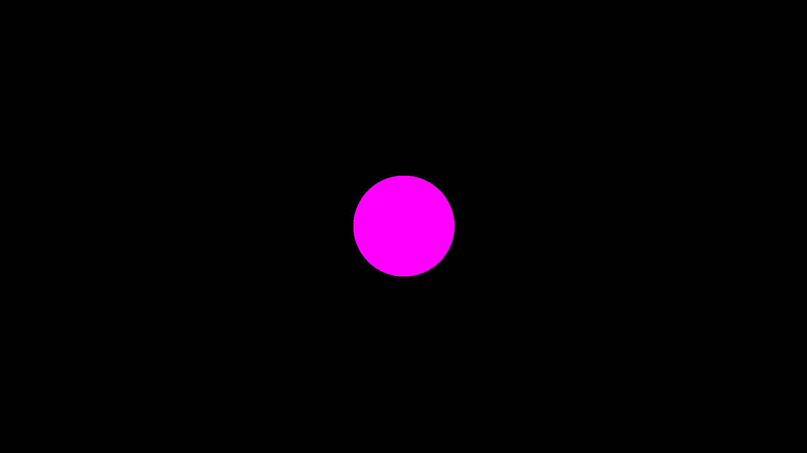
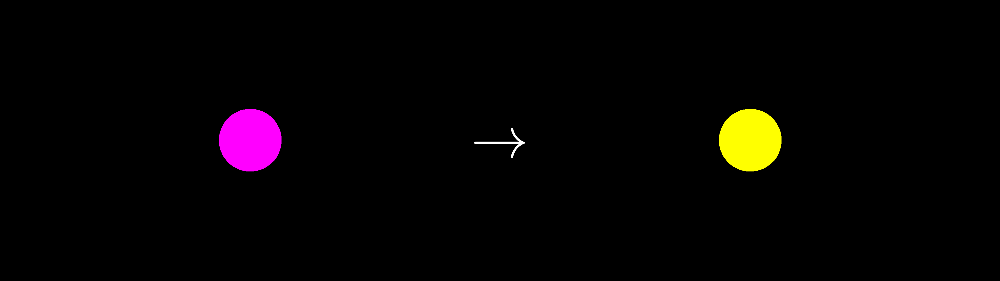
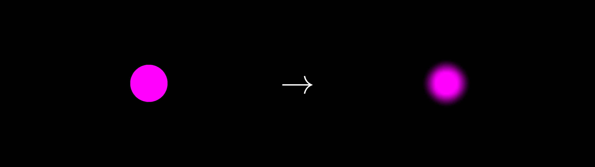
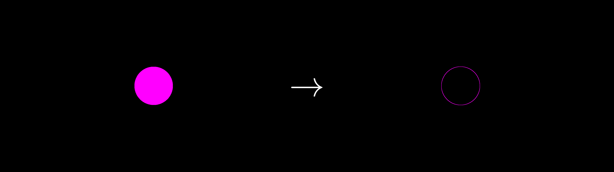
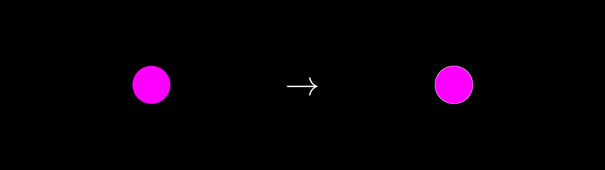

Post processing
Once you have generated an image via any of the provided Fable Executables (such as Colors, Shaders, or Hutchinson operators), you may want to do additional operations before writing to file. Right now, we support the following operations:
- Clipping: This is the process of turning any pixel above a given threshold intensity into another desired color.
- Filtering: This is essentially a convolution with a provided filter, for effects like a Gaussian blur.
- Sobel: This is a Sobel filter (without directional information). It is useful for edge detection or simple outlines.
- Outlines: This takes the Sobel information and turns it into a more distinct outline.
In this discussion, I will also describe how you may write your own post processing option, if you want. All the examples can be found in examples/postprocessing.md.
General Notes
The postprocess!(...) function is called when using write_image(...) or write_video(...). This means that the post processing step happens after the all FableExecutables have been run(...). Importantly, all post processing steps act exclusively on the canvas for each AbstractLayer type. Each canvas is essentially an Array (CuArray or ROCArray) of RGBA values that are initialized before post processing occurs. Each post processing step is performed in the order they are added to the postprocessing_steps Vector in each AbstractLayer.
There is no default post process for Shader and Color layers, which essentially means that no post process will be performed unless specified by the user. For FableLayers, there is always a CopyToCanvas(...) post process, which essentially takes the RGBA information from the run(...) function and turns it into a canvas for later post processing steps. In practice, this is a small discrepancy that users should not need to worry about.
For the following examples, we will be performing post processing on a simple circle created via a FableExecutable:
function quick_circle(num_particles, num_iterations; ArrayType = Array,
filename = "out.png")
circle = define_circle(; radius = 0.1, color = [1, 0, 1, 1])
fl = FableLayer(; H1 = circle, ArrayType = ArrayType)
run!(fl)
write_image(fl; filename = filename)
endThis will create a pink circle that looks like this:

Clipping
By default, the Clip post process will turn any RGBA value above a pre-defined threshold to another designated color; however, you can change the clip_op(clip operator) to use any function instead of >. You may also change how the intensity is calculated by passing in an intensity_function argument. Fable.jl currently supports the following intensity functions:
@inline function simple_intensity(c::CT) where CT <: Union{RGB}
return (c.r/3) + (c.g/3) + (c.b/3)
endand
@inline function perceptive_intensity(c::CT) where CT <: Union{RGBA}
return c.alpha * ((0.21 * c.r) + (0.72 * c.g) + (0.07 * c.b))
endThe latter is meant to more realistically portray to how humans perceive light.
The Clip post process can be created like so:
clip = Clip(; threshold = 0.5, color = RGBA(0,0,0,1),
intensity_function = simple_intensity, clip_op = >)Note that the key word arguments above are also the defaults for the Clip post process. Here is a quick example:
function clip_example(num_particles, num_iterations; ArrayType = Array,
filename = "clip_out.png")
circle = define_circle(; radius = 0.1, color = [1, 0, 1, 1])
clip = Clip(; threshold = 0.5, color = RGBA(1, 1, 0, 1))
fl = FableLayer(; H1 = circle, ArrayType = ArrayType,
postprocessing_steps = [clip])
run!(fl)
write_image(fl; filename = filename)
endThis will turn our pink ball yellow:

Filtering
The Filter post process essentially performs a convolution with a provided filter. Convolutions are somewhat complicated to understand, but if you want to learn more, please check out the chapter(s) available on the Algorithm Archive. All the necessary information for understanding how this post process works can be found there, along with an example using the Sobel operator.
By default, Fable.jl provides the following filters:
Identity: This is a test filter and just returns the exact image back
function Identity(; filter_size = 3, ArrayType = Array)
if iseven(filter_size)
filter_size = filter_size - 1
@warn("filter sizes must be odd! New filter size is " *
string(filter_size)*"!")
end
filter = zeros(filter_size, filter_size)
idx = ceil(Int, filter_size*0.5)
filter[idx, idx] = 1
return Filter(filter!, ArrayType(filter), nothing, false)
end
Gaussian / Blur: these perform a Gaussian blur of the image.
function gaussian(x,y, sigma)
return (1/(2*pi*sigma*sigma))*exp(-((x*x + y*y)/(2*sigma*sigma)))
end
function Blur(; filter_size = 3, ArrayType = Array, sigma = 1.0)
return Gaussian(; filter_size = filter_size, ArrayType = ArrayType,
sigma = sigma)
end
function Gaussian(; filter_size = 3, ArrayType = Array, sigma = 1.0)
if iseven(filter_size)
filter_size = filter_size - 1
@warn("filter sizes must be odd! New filter size is " *
string(filter_size)*"!")
end
if filter_size > 1
filter = zeros(filter_size, filter_size)
for i = 1:filter_size
y = -1 + 2*(i-1)/(filter_size-1)
for j = 1:filter_size
x = -1 + 2*(j-1)/(filter_size-1)
filter[i,j] = gaussian(x, y, sigma)
end
end
else
filter = [1.0]
end
filter ./= sum(filter)
return Filter(filter!, ArrayType(filter), nothing, false)
endThe Sobel post process also uses a Filter, but it will be discussed separately in the next section.
The only important note here is that because users are creating kernels themselves, it is possible to accidentally create a kernel of a different ArrayType than the layer's canvas. In this case, the kernel will change the array type of the filter and provide the following warning:
Info: filter array type not the same as canvas!
Converting filter to canvas type...Finally, here is a quick example using the Gaussian Blur post process (note you can also use the same post process by calling Gaussian instead in the same way):
function blur_example(num_particles, num_iterations; ArrayType = Array,
filter_size = 3, filename = "blur_out.png")
circle = define_circle(; radius = 0.1, color = [1, 0, 1, 1])
blur = Blur(; filter_size = filter_size)
fl = FableLayer(; H1 = circle, ArrayType = ArrayType,
postprocessing_steps = [blur])
run!(fl)
write_image(fl; filename = filename)
endThis will produce the following image when using a $100\times 100$ filter:

Sobel operator
The Sobel operator is often called an "image derivative." More information can be found on the Algorithm Archive. In general, this operation can be split into 3 steps:
- A gradient in the $x$ direction ($G_x$)
- A gradient in the $y$ direction ($G_y$)
- A sum of both gradients: $\sqrt{G_x^2 + G_y^2}$
As an important note, many implementations of the Sobel operator also return gradient direction information. This part of the operation is not performed in Fable.jl by default.
Here is a quick example using the Sobel operator:
function sobel_example(num_particles, num_iterations; ArrayType = Array,
filename = "sobel_out.png")
circle = define_circle(; radius = 0.1, color = [1, 0, 1, 1])
sobel = Sobel()
fl = FableLayer(; H1 = circle, ArrayType = ArrayType,
postprocessing_steps = [sobel])
run!(fl)
write_image(fl; filename = filename)
endThis will produce the following image:

Outlines
Outlines are surprisingly tricky to get right. I will not argue that the Outline implementation in Fable.jl is perfect, but it works well enough for now.
The current implementation was inspired by Canny edge detection and does the following:
- Blurs the given image by some factor related to the user-provided
linewidthvariable. - Performs a Sobel operation on the image to get the image derivative.
- Performs naive ridge detection, which sets any value in the Sobel-operated canvas above a certain threshold to be the provided outline
color. This is essentially aClippost process from above.
There are a bunch of key word arguments you can use for Outline:
outline = Outline(; linewidth = 1,
color = RGBA(1.0, 1.0, 1.0, 1.0),
intensity_function = simple_intensity,
object_outline = false,
threshold = 1/(linewidth*linewidth+1),
sigma = 1)
Here, linewidth is the desired line width of the outline, color is the desired color, intensity_function is the intensity function as described in the Clip subsection above, threshold is used for ridge detection, and sigma defines the width of the Gaussian for the blur kernel. The only tricky argument is object_outline, which is specifically for FableLayers. It indicates that the user wants to outline the fractal object, itself, not any inner components from potentially using a FableUserMethod for coloring the fractal object.
Here is a quick example using the Outline post process:
function outline_example(num_particles, num_iterations; ArrayType = Array,
filename = "outline_out.png", linewidth = 1,
object_outline = false)
circle = define_circle(; radius = 0.1, color = [1, 0, 1, 1])
outline = Outline(; linewidth = linewidth, object_outline = object_outline)
fl = FableLayer(; H1 = circle, ArrayType = ArrayType,
postprocessing_steps = [outline])
run!(fl)
write_image(fl; filename = filename)
endThis will produce the following image:

Building your own
Finally, we will touch on what is necessary to build a post process from scratch. Right now, this can be done by creating a new AbstractPostProcess struct, similar to those used in the above examples. Here is the Clip post processing struct for reference:
struct Clip <: AbstractPostProcess
op::Function
clip_op::Function
intensity_function::Function
threshold::Number
color::CT where CT <: Union{RGB, RGBA}
initialized::Bool
endTo be honest, this part of the code is a little sticky right now, so feel free to try to clean it up in a PR, but the minimal AbstractPostProcess struct would look like this:
struct Minimal <: AbstractPostProcess
op::Function
initialized::Bool
endHere, op is the provided function the AbstractPostProcess should use, while initialized is a boolean value indicating whether the post process needs initialization. This is useful for post processes that require additional canvas parameters, like the Filter post process:
mutable struct Filter <: AbstractPostProcess
op::Function
filter::AT where AT <: Union{Array, CuArray, ROCArray}
canvas::AT where AT <: Union{Array, CuArray, ROCArray, Nothing}
initialized::Bool
endIf initialized is set to false, the initialize!(...) function will be called when using the post process for the first time. Here is the initialize!(...) function for Filter:
function initialize!(filter::Filter, layer::AL) where AL <: AbstractLayer
ArrayType = layer.params.ArrayType
if !(typeof(filter.filter) <: layer.params.ArrayType)
@info("filter array type not the same as canvas!\nConverting filter to canvas type...")
filter.filter = ArrayType(filter.filter)
end
filter.canvas = ArrayType(zeros(eltype(layer.canvas), size(layer.canvas)))
endNote that all initialize! functions should have the args (filter::Filter, layer::AL). In practice, these functions are usually used to make sure that the post process canvas has the same ArrayType and size as the layer.
As a final note: when designing an op function to be used for each post process, remember that the ArrayType could be a CuArray or ROCArray, so try to make the functions GPU friendly. This is why many of the post processes are written in KernelAbstractions.
Again, this part of the code is sticky, so if you need to add another post process, feel free to create an issue and we can talk about whether it makes sense to add directly to Fable.jl!